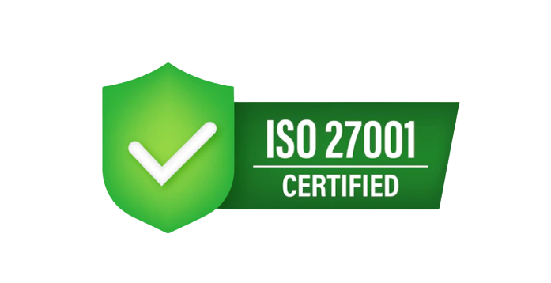
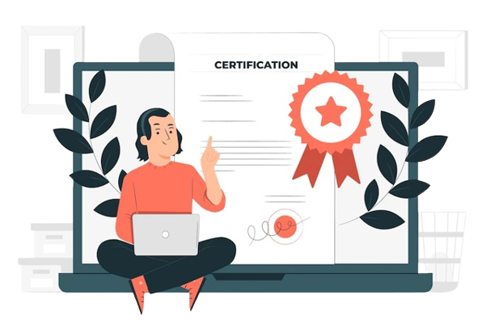

ISO 27001 Implementation:
What Are the Business Benefits?
ISO 27001 is a globally accepted standard for information security management. It has become the de facto standard for best practice in the field. ISO 27001 can help businesses achieve a number of business benefits, such as improved cybersecurity, better data protection, and increased compliance with regulatory requirements. In addition, implementing ISO 27001 can help reduce costs associated with information security incidents.
What Is ISO 27001?
ISO IEC 27001 is published by the International Standards Organisation (ISO) and the International Electrotechnical Commission (IEC). It provides one of the most widely adopted and accepted frameworks for implementing IT information security management best practices.
The primary standard within the family is ISO 27001:2013, which sets the requirements for any organisation's Information Security Management System (ISMS) to be audited. ISO 27001:2013 Certification can be used as a measure of compliance in order to attain certification of this standard. This is the standard that is applied to all kinds of businesses regardless of their industry, location, or size.

ISO 27001 Implementation – Benefits To Business
The benefits of obtaining ISO 27001 certification as compared to the ISO IEC 27001 2013 standard are numerous. They can be divided into two basic categories.
General to all businesses and industries
- Security assurance has been enhanced.
- By tracking processes, I was able to improve business performance.
- Through regular awareness training, improved security awareness was encouraged for staff.
- Enhanced capability to connect to the GDPR.
- Those who have achieved ISO IEC 27001 2013 certification enjoy numerous competitive advantages over their competitors.
- ISO IEC 27001 certification gives our establishment an enhanced reputation.
Businesses with specific requirements
- The exact same advantages, plus those given below, may also apply.
- In some industries, business partners must go through accreditation or licensing in order to be considered fully qualified.
- Many industries have enacted regulations that ISO IEC 27001 Keeping ISO IEC 27001 2013 certification usually reduces audit requirements and frequency, which in turn frees resources for other tasks. 2013 certification meets. Assistance in meeting the requirements of the specific industry is provided by it.
Important Considerations For ISO 27001 Implementation
When planning your ISO 27001 implementation, you need to have some essential factors in mind ahead of time.
An ISMS is first and foremost a business system. There are a number of technology factors within an ISMS, and IT involvement will be essential, but the implementation and direction of the ISMS will originate from senior management. An ISMS should be led by someone that is consistently referred to as its director or at the top.
It is crucial to understand that for ISMS to be effective and complement your organisation, it must be created for your business by your business. It's in no way to say that outside assistance shouldn't be sought; of course, it’ll probably be necessary. Rather, it indicates each risk identified, along with controls implemented, procedures, and workflows developed by the ISMS must have direct input by stakeholders in the firm. If this is not done from the beginning, the resulting ISMS will not match the company's culture and will not be embraced and accepted by employees.

The process for implementing an ISMS in most businesses will involve developing trainings for all employees. This will require change management, so it's important to involve all employees in the development process, not just management and consultants.
Another factor to consider during the journey of implementing an ISMS is the amount of time and effort that will be required. On average, companies will need to invest between eight and 12 months to create and implement a basic ISMS that will meet the requirements for the Standard of certification. However, this will only be the beginning total time commitment to operating and improving an ISMS on a daily basis, depending on the size of the organisation and the complexity of the ISMS, is approximately one quarter of an average employee's time.
For certification audits, being able to prove this commitment to senior management and the time and energy commitment to operating the ISMs are critical.
In conclusion, ISO 27001 implementation can provide a number of important benefits to businesses, including improved security, better compliance, and reduced risk. By understanding these benefits and the steps necessary to achieve certification, businesses can make the most of this widely-recognized standard.